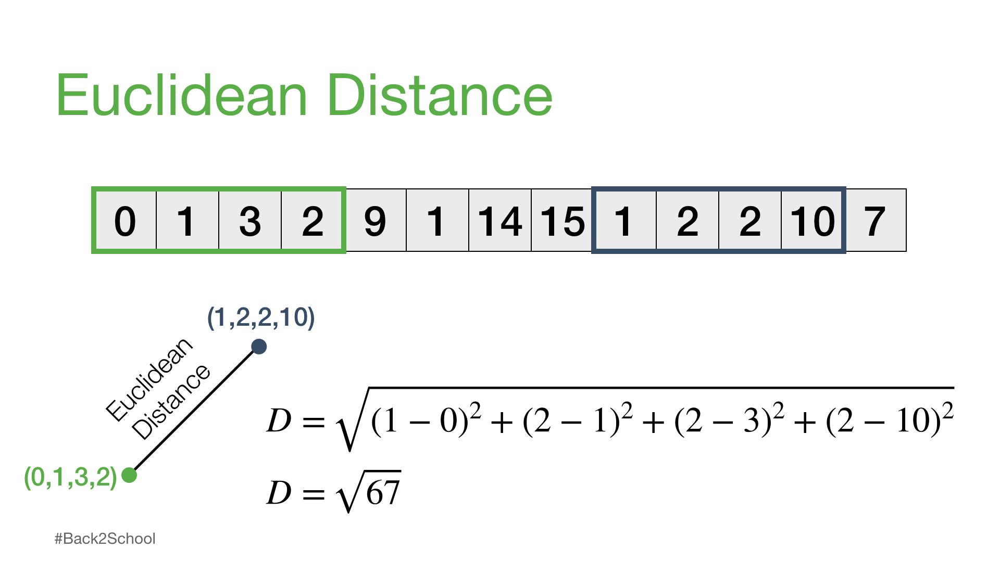
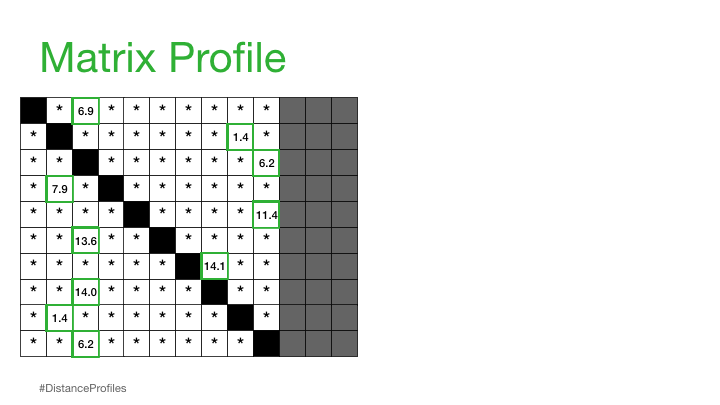
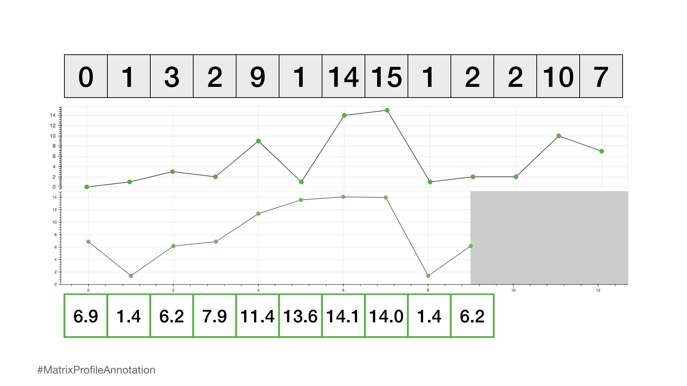

The Matrix Profile
Fast, effective tool for timeseries.
2023-12-31
Matrix Profile
A matrix profile is a vector that stores the z-normalized Euclidean distance between any subsequence within a time series and its nearest neighbor.
Easy peasy
Example: Time Series with Length n = 13
Let’s take a step back and start with a simple illustrative example:
To analyze this time series with length n = 13, we could:
- visualize the data or
- calculate global summary statistics (i.e., mean, median, mode, min, max).
If you had a much longer time series, then you may even feel compelled to build:
- an ARIMA model,
- perform anomaly detection, or
- attempt a forecasting model
but these methods can be complicated and may often have false positives or no interpretable insights.
Time Series Visualization
If we were to apply Occam’s Razor,
then what is the most simple and intuitive approach?
To answer this question, let’s start with our definition of Matric profile.
A matrix profile, a vector that stores the z-normalized Euclidean distance between any subsequence within a time series and its nearest neighbor.
Let’s take a closer look at Subsequence
Subsequence
a part or section of the full time series
The following are all considered subsequences of our time_series since they can all be found in the time series above.
[0, 1]
[9, 1, 14]
[3, 2, 9, 1, 14, 15, 1, 2]Each subsequence can have a different sequence length.
We’ll call a sequence length m.
So, for example, if we choose m = 4, then we can think about how we might compare any two subsequences of the same length.
m = 4
i = 0 # starting index for the first subsequence
j = 8 # starting index for the second subsequence
subseq_1 = time_series[i:i+m]
subseq_2 = time_series[j:j+m]
print(subseq_1, subseq_2)[0, 1, 3, 2] [1, 2, 2, 10]Subsequences
One way to compare any two subsequences is to calculate what is called the Euclidean distance.
Euclidean Distance
the straight-line distance between two points
Euclidiean Distance
Take two points: (0,1,3,2) and (1,2,3,10).
Euclidean Distance
import math
m = 4
i = 0 # starting index for the first subsequence
j = 8 # starting index for the second subsequence
D = 0
for k in range(m):
D += (time_series[i+k] - time_series[j+k])**2
print(f"The square root of {D} = {math.sqrt(D)}")The square root of 67 = 8.18535277187245But wait, there is more
Let’s take this a step further.
Let’s keep one subsequence the same (reference subsequence).
Then let the second subsequence be a sliding window.
THEN compute the Euclidean distance for each window!
The resulting vector of pairwise Euclidean distances is known as a distance profile.
Pairwise Euclidean Distance
Distance Profile - Pairwise Euclidean Distances
Pairwise Euclidean Distance
Trivial Match
Not all of these distances are useful.
Specifically, the distance for the self match (or trivial match) isn’t informative since the distance will be always be zero when you are comparing a subsequence with itself.
Nothing to see here
So, we’ll ignore it and, instead, take note of the next smallest distance from the distance profile and choose that as our best match:
Trivial Match
Next, we can shift our reference subsequence over one element at a time and repeat the same sliding window process to compute the distance profile for each new reference subsequence.
Distance Profiles
Distance Matrix
If we take all of the distance profiles that were computed for each reference subsequence and stack them one on top of each other then we get something called a distance matrix.
Distance Matrix
Matrix Profile
Let’s simplify this distance matrix.
We will only look at the nearest neighbor for each subsequence.
When we do this it creates a Matrix Profile.
Matrix Profile
a vector that stores the (z-normalized) Euclidean distance between any subsequence within a time series and its nearest neighbor
Matrix Profile
Practically, what this means is that the matrix profile is only interested in storing the smallest non-trivial distances from each distance profile, which significantly reduces the spatial complexity to O(n).
Matrix Profile
Time Series Matrix Profile
We can now plot this matrix profile underneath our original time series. And, as it turns out, a reference subsequence with a small matrix profile value (i.e., it has a nearest neighbor significantly “closeby”) may indicate a possible pattern.
While a reference subsequence with a large matrix profile value (i.e., its nearest neighbor is significantly “faraway”) may suggest the presence of an anomaly!
Time Series Matrix Profile
What Matrix Profile gives out
By simply computing and inspecting the matrix profile alone, one can easily pick out the:
- top pattern (global minimum) and
- rarest anomaly (global maximum).
And this is only a small glimpse into what is possible once you’ve computed the matrix profile!
The Brute Force Approach
Now, it might seem pretty straightforward at this point but…
We need to do is consider how to compute the full distance matrix efficiently.
Let’s start with the brute force approach:
for i in range(n-m+1):
for j in range(n-m+1):
D = 0
for k in range(m):
D += (time_series[i+k] - time_series[j+k])**2
D = math.sqrt(D)At first glance, this may not look too bad but…
if we start considering both the computational complexity as well as the spatial complexity then we begin to understand the real problem.
It turns out that, for longer time series (i.e., n >> 10,000) the computational complexity is \(O(n^2m)\) (as evidenced by the three for loops in the code above) and …
the spatial complexity for storing the full distance matrix is \(O(n^2)\).
In Prospective
To put this into perspective, imagine if you had a single sensor that collected data 20 times/min over the course of 5 years.
This would result:
n = 20 * 60 * 24 * 364 * 5 # 20 times/min x 60 mins/hour x 24 hours/day x 365 days/year x 5 years
print(f"There would be n = {n} data points")There would be n = 52416000 data pointsAssuming that each calculation in the inner loop takes 0.0000001 seconds then this would take:
It would take 137371850.1792 seconds to computeWhich is equivalent to 1,598.7 days (or 4.4 years) and 11.1 PB of memory to compute!
It is not feasible to compute the distance matrix using our naive brute force method.
Instead, we need to figure out how to reduce this computational complexity by efficiently generating a matrix profile and this is where STUMPY comes into play.
STUMPY
In the fall of 2016, researchers from the University of California, Riverside and the University of New Mexico published a beautiful set of back-to-back papers that described an exact method called STOMP for computing the matrix profile for any time series with a computational complexity of \(O(n^2)\)!
STUMPY Developers
With the academics, data scientists, and developers in mind, STUMPY developers have taken these concepts and created open sourced STUMPY.
A powerful and scalable library that efficiently computes the matrix profile according to this published research.
And, thanks to other open source software such as Numba and Dask, their implementation is highly parallelized (for a single server with multiple CPUs or, alternatively, multiple GPUs), highly distributed (with multiple CPUs across multiple servers). We’ve tested STUMPY on as many as 256 CPU cores (spread across 32 servers) or 16 NVIDIA GPU devices (on the same DGX-2 server) and have achieved similar performance to the published GPU-STOMP work.
Conclusion
According to the original authors, “these are the best ideas in times series data mining in the last two decades” and “given the matrix profile, most time series data mining problems are trivial to solve in a few lines of code”.
Additional Notes
For the sake of completeness, we’ll provide a few more comments for those of you who’d like to compare your own matrix profile implementation to STUMPY. However, due to the many details that are omitted in the original papers, we strongly encourage you to use STUMPY.
In our explanation above, we’ve only excluded the trivial match from consideration. However, this is insufficient since nearby subsequences (i.e., i ± 1) are likely highly similar and we need to expand this to a larger “exclusion zone” relative to the diagonal trivial match. Here, we can visualize what different exclusion zones look like:
Exclusion Zone
However, in practice, it has been found that an exclusion zone of i ± int(np.ceil(m / 4)) works well (where m is the subsequence window size) and the distances computed in this region are is set to np.inf before the matrix profile value is extracted for the ith subsequence. Thus, the larger the window size is, the larger the exclusion zone will be. Additionally, note that, since NumPy indexing has an inclusive start index but an exlusive stop index, the proper way to ensure a symmetrical exclusion zone is:
excl_zone = int(np.ceil(m / 4))
zone_start = i - excl_zone
zone_end = i + excl_zone + 1 # Notice that we add one since this is exclusive
distance_profile[zone_start : zone_end] = np.infFinally, it is very uncommon for users to need to change the default exclusion zone. However, in exceptionally rare cases, the exclusion zone can be changed globally in STUMPY through the config.STUMPY_EXCL_ZONE_DENOM parameter where all exclusion zones are computed as i ± int(np.ceil(m / config.STUMPY_EXCL_ZONE_DENOM)):
import stumpy
from stumpy import config
config.STUMPY_EXCL_ZONE_DENOM = 4 # The exclusion zone is i ± int(np.ceil(m / 4)) and is the same as the default setting
mp = stumpy.stump(T, m)
config.STUMPY_EXCL_ZONE_DENOM = 1 # The exclusion zone is i ± m
mp = stumpy.stump(T, m)
config.STUMPY_EXCL_ZONE_DENOM = np.inf # The exclusion zone is i ± 0 and is the same as applying no exclusion zone
mp = stumpy.stump(T, m)Resources
STUMPY Matrix Profile Github Code Repository

Gem City Tech ML/AI